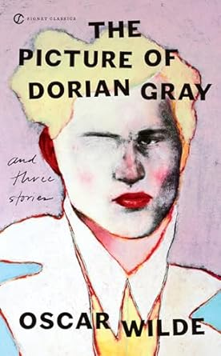
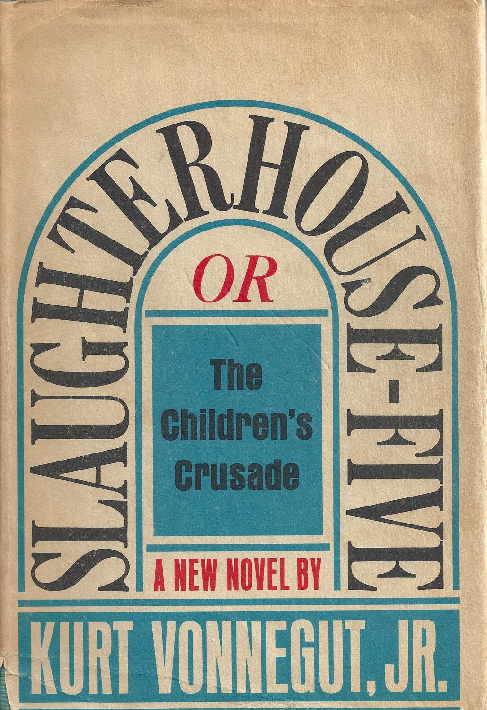
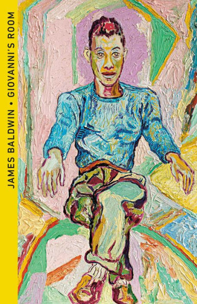
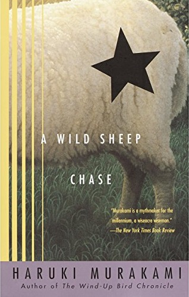

A Little About Me...
Hi! I'm Meera. I grew up in North New Jersey, which means I grew up going into NYC using NJ Transit on weekends, and that I love American-Italian food. In my free time, I like to hike around the garden state, with my favorite spot being Round Valley Resevoir in Clinton. In my free time, you can find me reading books or talking about books. My favorites are War and Peace by Leo Tolstoy, Kitchen by Bananana Yoshimoto, A Picture of Dorian Gray by Oscar Wilde, A Wild Sheep Chase by Haruki Murakami, Slaughter House Five by Kurt Vonnegut, and Giovanni's Room by James Baldwin. At least, these are my current favorites! If you've read anything good recently, let me know!
 |
 | |
|  |  |  |
Aside from books, I love to cook and bake, and hang out at cafes with my friends and family. I love cooking Indian food like paneer, dosa, and dahl, and baking anything with cardamom or cinnamon in it. Halloween is my favorite holiday, and I love seeing people's costumes. For the past three Halloweens, I've been Jackie Kennedy, a mime, and a runnaway bride. Let me know what your favorite halloween costumes you've seen or been are!